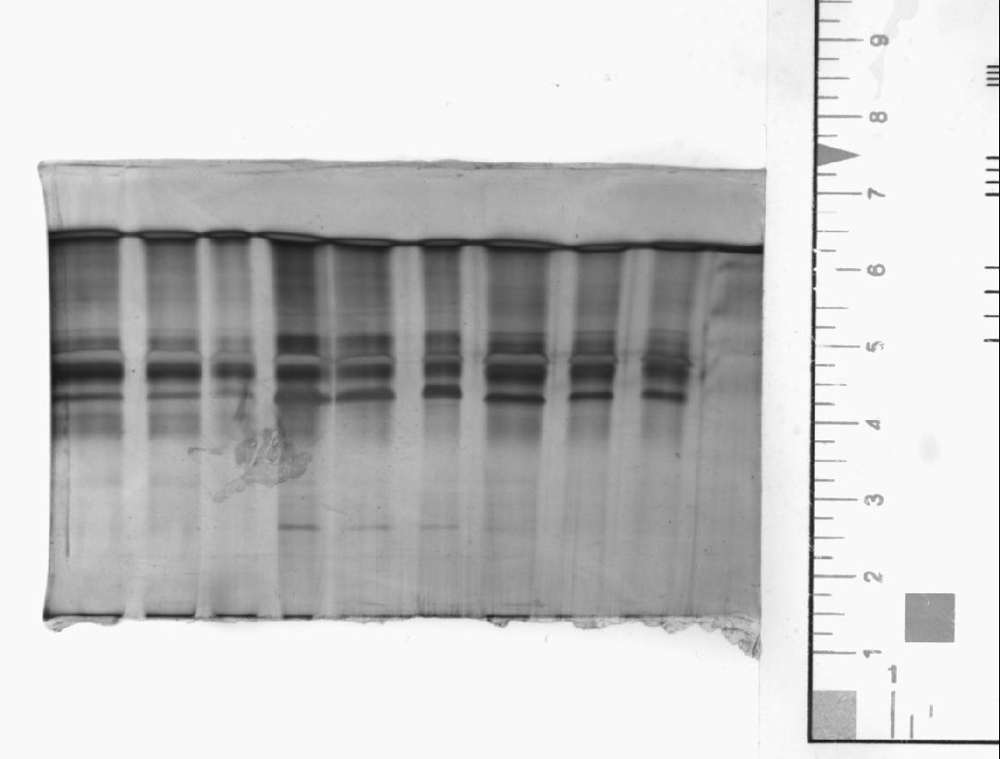

Setup of
Bio-Rad
Proteome Works™
SpotCutter Plus
There are many calibrations that the Bio-Rad Proteome Works Spot Cutter Plus must go through.
Perhaps the most important one is the alignment of where the user designates the cut mark and making sure that the cutter cuts at that position.
When the cutter is not initially aligned, it is necessary to align it by staining a 25 × 25 cm sheet of PVDF membrane in Coomassie Brilliant Blue R-250, and then placing it on the cutting mat. The PDQuest software is then told to acquire an image using the spot cutter's camera, and then the cutter cuts a grid of 5 holes × 5 holes. The backlight in the platform bed of the cutter is then turned on and the camera acquires the image. That image is then sent to the software so that it understands the coordinate positioning of the cutter.
One of the major headaches of this process is that one does not get another chance if the cutting of the large sheet of Coomassie-stained PVDF goes wrong. And many things can go wrong! These are the things that can go wrong:
This section will not talk about how to calibrate the cutting position since that is detailed in the Bio-Rad manual.
Instead, this shows how to confirm the cutter's cutting position is calibrated and aligned.
The image below is of the 1D (SDS-PAGE) gel used in this example. It was imaged with the VersaDoc 1000 with the ruler. The ruler was used to help set the gel dimensions in the Image Info. This is explained in another section of the Proteomics Reference.
For doing manual excision, it does not appear to be necessary to set the gel dimensions. But if the gel image is processed for spot detection and matching and into an analysis set that determines spots for cutting, it is necessary to set gel dimensions. 
So the gel was placed on the platform bed of the cutter and the camera of the cutter was used to visualize the gel. Using the zoom-in features, the parts of the gel to be cut were marked: usually the cut marquee rectangle is larger than the 1 mm cut diameter, so multiple cuts are specified if the multiple cuts option is set to greater than 1. In this case it was set to the maximum (11).
Below is the image shown as PDQuest presents it when the spot cutter camera takes the image. That is, it is fully zoomed out and the whole platform is seen. In this case, the cut marks are also seen, indicating that the zoom out was done to show the whole platform although the cut marks had already been specified. Clearly the cut marks and the gel details are barely discernable when the image is fully zoomed out.
Thus it is necesary to zoom in to see the gel detail and see the cut marks. In
the image below, four cuts were specified (click on the image to get a larger
image in the original resolution in a new window). The cuts are specified by a
format of plate number, well number, where the plate is the 96-well
microplate, and well number has the format RowColumn where
Row is a letter from A to H for the eight rows of a 96-well
microplate, and Column is from 01 to 12 for the twelve
columns for a 96-well microplate with twelve rows. So the cut designated
1,A01 will go to microplate 1 (the first microplate which should probably
be written with a 1
somewhere on the plate using a Sharpie, and
the gel cut(s) will all be put in well A1.
Note in the last sentence of the previous paragraph that the phrase gel
cut(s)
were used. That is because a cut mark can have a large area into
which more than one cut hole can fit within that area. The cutter is a metal
cylinder, and two types of cylinders can be fit: one with a 1 mm diameter and
the other with a 1.5 mm diameter. The user has to know which one is fit. In
this case, a 1 mm diameter cutter is fit, so the blue circles all indicate a 1
mm-sized cut hole. Since the cut mark was drawn with a large area, the PDQuest
software tried to fit as many 1 mm cut holes as possible in the area. If the
multiple cut option is set to 1 (that is, no multiple cuts in a designated cut
mark or cut area), then only one cut hole will be specified, and it will be
positioned as the center of the rectangular area designated for the cut. In
our case, the maximum multiple cuts of 11 were indicated, so up to 11 cut holes
will be given. In the case of the area designated for cutting, only 9 cut holes
could be specified, and so nine cuts will be made and all of the cuts will be
placed into well A1 of the first microplate. That point must be understood. All
multiple cuts are placed into one well. This can be good thing, because it
increases the sensitivity of detecting a protein if the protein is present in
the gel in abundant amounts and it is absolutely not mixed in with other
proteins in the stained region/band/spot of the gel.
The image below shows the image taken by spot cutter camera after all
the cuts have been made. This is called a confirmation
image where the
PDQuest software makes a request of the user to take this image to confirm the
cuts having been made. This image shows the whole platform and cannot be
discernable. So it is necessary to zoom in to the image to get the right
detail. This is done in the next image below.
In the image immediately below, the area where there cuts occurred is a zoom-in on the image immediately above. Without clicking on the image to get a bigger image at original resolution, white holes in a pattern similar to the cut marks are seen in three cut designations: the 9-hole cut mark in the large band that is present in lane 2, the 7-hole cut mark in the band in lane 4, and the 3-hole cut mark at the bottom edge of the gel also in lane 4. Not clearly seen in the single-hole cut mark designated in a band also in lane 4.
Thus it would be necessary to see the image very much zoomed in by clicking on the image in the web page to get the larger image. When that is done, it seems evident that there is no cut mark.
What makes it difficult however to know if a cut occurred or not is that the 1 mm cut hole is about the size of an image pixel. To perceive any image object or artifact well, an object must really be bigger than a 3×3 pixel size.
But there is another means by which one can make sure that the gel cuts were made or rather obtained, and this is explained after the image below.
Bio-Rad tells the spot cutter users to place the microplate on the gel platform—if possible, without moving the gel already sitting there!—and to take an image of the plate. During excision of gels by use of analysis sets (not manual excision), the software offers this opportunity to the user, and it should definitely be taken. The image below shows why. The image clearly shows stained cut gel pieces in the well in the numbers that would be expected. Whether or not a cut was successful on the gel, the important thing is, did the cut gel piece make it into the microplate well?
For well A1, nine pieces were to be cut. For well A2, three pieces were to be cut. For well A3, one piece is expected, and for well A4, seven pieces are expected. In A1, A2, and A4, what is expected appears to be seen. For well A3, it appears there is a drop of water rather than a single gel piece. See below the image about how to deal with this.
If the image of the microplate wells do not confirm or verify what is expected for many of the wells with respect to the cutting of the gel, then be sure to note this in the laboratory book. Continue processing normally in most cases—for example, reductively alkylate (if necessary), do the protease (trypsin) digestion, and recover the peptides for mass fingerprinting on a MALDI—but consider that no mass spectrum will be seen for the exceptions.
Of course, it is possible, either in the manual or analysis set excision mode, to repeat the cutting for cut marks that were clearly not cut.
In some rare cases, the gel holes are evidenc and the gel was cut, but the gel pieces are not in the microplate wells. How does that happen? Well, the gel piece fell out the cutter during the transport of the cutter from the cut site to the microplate well.
Why?
A good reason may be that your gel has been soaked in a buffer containing glycerol. All gels set up for cutting should really be soaked several times in Type I (or distilled) water to remove anything that should not be in the gel. That would include glycerol, organics (methanol or ethanol), and acids (acetic acid). Indeed, acids and especially alcohols shrink the gel and this creates the possibility of making gel cuts that mix proteins where that is unwanted.